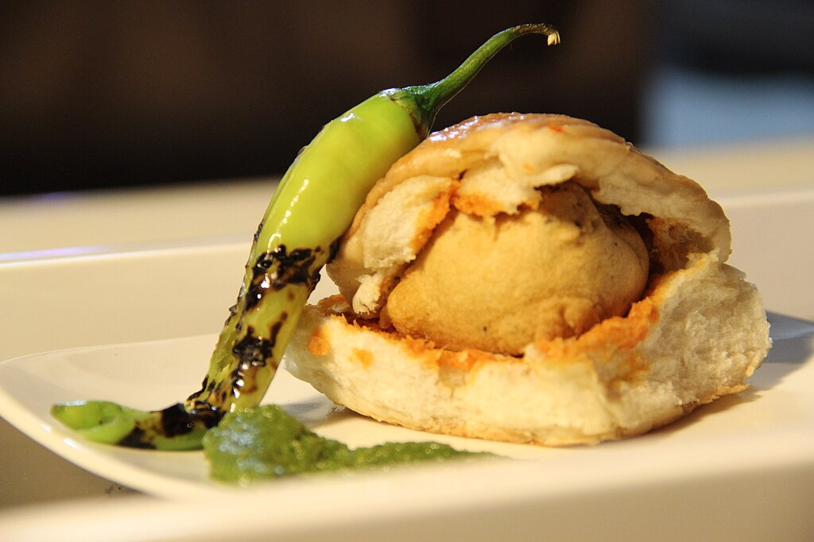

Vada Pav Recipe

Description
Vada pav, alternatively spelt wada pao, is a vegetarian fast food dish native to the Indian state of Maharashtra.
The dish consists of a deep-fried potato dumpling placed inside a bread bun (pav) sliced almost in half through
the middle. It is generally accompanied with one or more chutneys and a green chili pepper.
Although it originated as an affordable street food in Mumbai, it is now served in food stalls and restaurants
across India. It is also called Bombay burger.
Ingredients
- Potatoes
- Mustard seeds
- Ginger-garlic-green chili paste
- Gram flour
- Turmeric, red chili powder, and salt
- Pav
- Green chutney and tamarind chutney
Steps
- Heat oil, add mustard seeds, then ginger-garlic paste. Stir in mashed potatoes, turmeric, salt, coriander,
and lemon juice. Cool.
- Mix gram flour, turmeric, chili powder, salt, and water to a smooth batter.
- Shape potato mixture into balls, dip in batter, and deep fry until golden.
- Layer the lasagna according to this: Meat sauce, noodles, ricotta mixture, mozzarella slices, meat sauce,
parmesan cheese, repeat the layers and then top with the remaining parmesan.
- Spread chutneys on split pav, add a vada, and serve hot.
Home